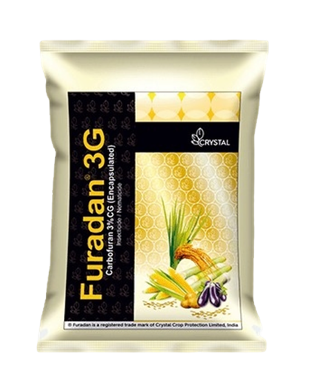

Buy Furadan 3g


Name of the Product:
Furadan 3G is used to control insects in a wide variety of field crops, including potatoes, corn and soybeans. It is a systemic insecticide, which means that the plant absorbs it through the roots, and from here the plant distributes it throughout its organs where insecticidal concentrations are attained. Carbofuran also has contact activity against pests.
How to use
- Use as top dressing
- Sprinkle or Mix in Soil Around the Plant
- Approx. 1 tsp on 3"x3" pot.
- Once every month
Keep In Mind
- Store in a cool dark place, away from sunlight
- Do not use in food handling areas
- Preferably no added chemical components
- Better not apply to wilted and stressed plants until recovered.
- Keep away from animals and children
- Use protective gloves at all times/li>